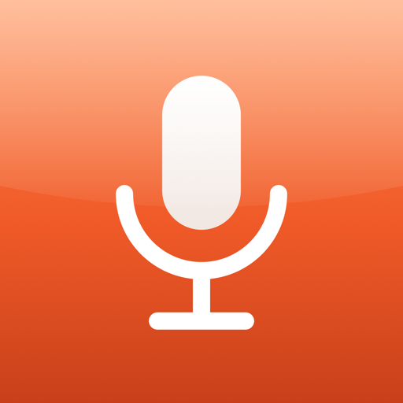

MicSelect
lemonde21 · v0.3.0
Plug wired earphones into an iPad and iOS moves every app to the earphone mic. MicSelect keeps the iPad's built-in microphone (or forces the headset mic) in Discord and any other app that records audio, while sound still plays through your earphones.
Features
- Default, Built-in or Headset: pick your microphone in Settings.
- Works in every app that uses the standard iOS audio system: Discord, Telegram, voice recorders, browsers.
- Switch mid-call, no app restart needed.
- Listen to microphone monitor with a level meter to check which mic is active.
- Check connected microphones lists what iOS currently exposes.
- Command line:
micsel builtin,micsel headset,micsel default. - Remembers your choice across resprings and reboots.
Limitations
- Works only if iOS still offers the internal mic while earphones are connected.
- Phone/FaceTime calls, Siri and dictation use separate audio paths and aren't affected.
- Aimed at wired earphones; Bluetooth headsets behave differently.
Information
- Compatibility
- iOS 15.0 – 15.8.x
- Jailbreak
- Rootless (Dopamine)
- Needs
- ElleKit / Substrate, PreferenceLoader
- License
- MIT
Changelog
0.3.0: first public release.